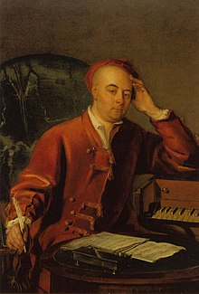

 (Georg Friedrich Händel o Haendel; Halle, actual Alemania, 1685 - Londres, 1759) Compositor alemán naturalizado inglés. Estricto contemporáneo de Johann Sebastian Bach (aunque difícilmente podrían hallarse dos compositores más opuestos en cuanto a estilo y aspiraciones), Haendel representa no sólo una de las cimas de la época barroca, sino también de la música de todos los tiempos. Músico prolífico como pocos, su producción abarca todos los géneros de su época, con especial predilección por la ópera y el oratorio, a los que, con su aportación, contribuyó a llevar a una etapa de gran esplendor.
Oponiéndose a los deseos de su padre, quien pretendía que siguiera los estudios de derecho, la carrera de Haendel como músico comenzó en su Halle natal, donde tuvo como profesor al entonces célebre Friedrich Wilhelm Zachau, organista de la Liebfrauenkirche; fue tal su aprovechamiento que en 1702 fue nombrado organista de la catedral de su localidad y, un año más tarde, violinista de la Ópera de la corte de Hamburgo, donde entabló contacto con Reinhard Keiser, un compositor que le introdujo en los secretos de la composición para el teatro.
En Hamburgo, precisamente, estrenó Haendel en 1705 su primera ópera, Almira, que fue bien acogida por el público. Un año más tarde el músico emprendió un viaje a Italia que había de tener especial importancia, ya que le dio la oportunidad de familiarizarse con el estilo italiano e introducir algunas de sus características en su propio estilo, forjado en la tradición contrapuntística alemana. Las óperas Rodrigo y Agrippina y el oratorio La Resurrezione datan de esa época.
En 1710, de regreso en Alemania, Georg Friedrich Haendel fue nombrado maestro de capilla de la corte del Elector de Hannover, puesto que abandonó al final de ese mismo año para trasladarse a Inglaterra, donde pronto se dio a conocer como autor de óperas italianas. El extraordinario triunfo de la segunda de su autoría, Rinaldo, le decidió a afincarse en Londres a partir de 1712.
Dos años más tarde, su antiguo patrón, el Elector de Hannover, fue coronado rey de Inglaterra con el nombre de Jorge I, y el compositor reanudó su relación con él, interrumpida tras el abandono de sus funciones en la ciudad alemana. Fueron años éstos de gran prosperidad para Haendel: sus óperas triunfaron en los escenarios londinenses sin que los trabajos de autores rivales como Bononcini y Porpora pudieran hacerles sombra.
Sin embargo, a partir de la década de 1730, la situación cambió de modo radical: a raíz de las intrigas políticas, las disputas con los divos (entre ellos el castrato Senesino), la bancarrota de su compañía teatral y la aparición de otras compañías nuevas, parte del público que hasta entonces lo había aplaudido le volvió la espalda.
A partir de ese momento, Haendel volcó la mayor parte de su esfuerzo creativo en la composición de oratorios: si Deidamia, su última ópera, data de 1741, de ese mismo año es El Mesías, la obra que más fama le ha reportado. Con temas extraídos de la Biblia y textos en inglés, los oratorios -entre los que cabe citar Israel en Egipto, Sansón, Belshazzar, Judas Maccabeus, Solomon y Jephta- constituyen la parte más original de toda la producción del compositor y la única que, a despecho de modas y épocas, se ha mantenido en el repertorio sin altibajos significativos, especialmente en el Reino Unido, donde el modelo establecido por Haendel ha inspirado la concepción de sus respectivos oratorios a autores como Edward Elgar o William Walton.
No obstante, no hay que olvidar otras facetas de su producción, en especial la música instrumental, dominada por sus series de Concerti grossi y conciertos para órgano. Los últimos años de vida del compositor estuvieron marcados por la ceguera originada a consecuencia de una fallida operación de cataratas. A su muerte fue inhumado en la abadía de Westminster junto a otras grandes personalidades británicas.
{kind=link}